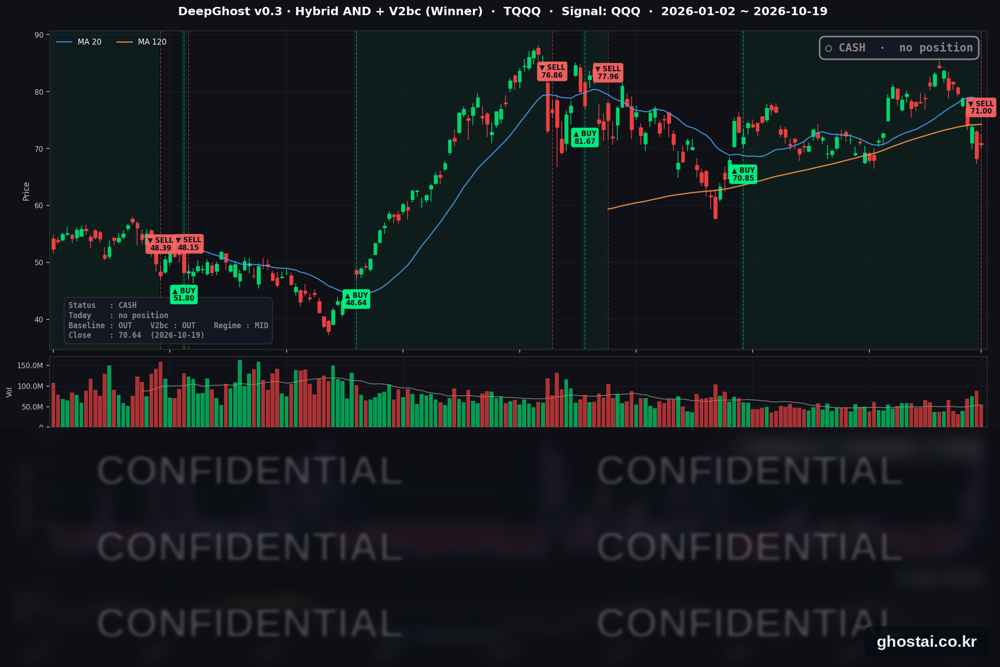

TQQQ $71 매도, 이제 현금 보유
· Ghost.AI 데일리 리포트
👻 매일 시그널과 히스토리를 홈페이지에서 한눈에 → www.ghostai.co.kr
회원 페이지 안내 — 회원 가입하시면 커버리지 전 종목의 원본 시그널과 분석 레포트를 매일 확인하실 수 있습니다. 회원 페이지는 블로그·유튜브보다 먼저 업데이트됩니다. 지금 베타 회원을 받고 있으며, 이메일과 필명만으로 가입하실 수 있고 서비스 사용료는 받지 않습니다. 이메일 확인 후 바로 이용하실 수 있습니다.
한 줄 요약: 전략은 10월 19일(월) 미국 장 시가에 TQQQ 를 매도해 현금 보유로 돌아섰습니다. 8월 6일 매수가와 거의 같은 가격이라 이번 거래는 거의 본전으로 끝났습니다. 같은 날 지난주 크게 내린 반도체·소프트웨어 종목이 반등해 나스닥 종합은 1.11% 올랐지만, S&P 500 구성종목은 3분의 1만 올랐고 10년물 금리는 5.136%로 올랐습니다.
📊 오늘의 매매 신호
| 항목 | 내용 |
|---|---|
| 오늘의 신호 | 🟡 신규 신호 없음 — 전략은 현금 보유를 유지합니다 |
| 포지션 상태 | 💵 현금 보유 중 (OUT OF POSITION) |
| 현금 보유 기간 | 2026-10-19 ~ (1일째) |
| TQQQ 종가 | $70.64(+3.56%) |
TQQQ 시그널 — OUT OF POSITION
현재 상태: 현금 보유 중 | 신규 신호 없음

전략은 10월 16일(금)에 나온 매도 신호에 따라 10월 19일(월) 미국 장 시가 71.00달러에 TQQQ 를 매도했습니다. 8월 6일 시가 70.85달러에 매수해 51거래일 보유했고, 매수가와 거의 같은 가격에 매도해 이번 거래는 거의 본전으로 끝났습니다.
보유 기간 중 평가수익률이 가장 높았던 날은 10월 6일(종가 기준 +18.9%)이었습니다. 그 뒤 지난주 반도체·AI 관련 종목이 크게 내리면서 그 수익은 거의 남지 않았습니다. 매도 가격 71.00달러는 매도 신호가 나온 10월 16일 종가 68.21달러보다는 높았습니다.
TQQQ 는 이날 3.56% 오른 70.64달러로 마감했습니다. 전 거래일 종가보다는 올랐지만, 매도 가격(시가)보다는 0.5% 낮은 종가입니다. 전략은 지금 현금을 보유하고 있으며, 다시 매수 신호가 나올 때까지 현금 보유를 유지합니다.
📌 특집 — 이번처럼 GA가 하루 만에 0미만으로 되돌아왔을 때, 그 뒤 나스닥 방향은?
10월 16일(금) 나스닥 100(QQQ)이 2.50% 내리자 지표는 하루 만에 -1.33에서 +2.94로 올랐고, 이날 장 마감 기준으로 TQQQ 전략에 매도 신호가 나왔습니다. 전략은 10월 19일(월) 시가에 TQQQ를 매도했습니다. 그런데 같은 날 QQQ가 1.21% 오르면서 지표는 다시 -1.50으로 내려왔습니다.
지표가 하루 만에 원래 자리로 돌아왔으니 곧 반등하는 것이 아니냐는 질문이 나올 수 있습니다. 그래서 과거에 같은 모양이 나왔던 때를 찾아, 그 뒤 QQQ가 어떻게 움직였는지 확인했습니다.
사례를 고른 기준
- 지표가 하루에 3 넘게 올라 +2 이상이 되고, 바로 다음 날 0 아래로 내려온 경우
- 2000년 3월부터 2026년 10월까지 QQQ에서 20건 (20거래일 안에 다시 나온 경우는 한 건으로 셌습니다)
- 수익률은 지표가 0 아래로 내려온 날(이번으로 치면 10월 19일)의 QQQ 종가를 기준으로 계산했습니다

| 기간 | 같은 모양 20건: 중간값 | 같은 모양 20건: 오른 비율 | 전체 거래일: 중간값 | 전체 거래일: 오른 비율 |
|---|---|---|---|---|
| 5거래일 뒤 | +1.02% | 60% | +0.46% | 57% |
| 10거래일 뒤 | -0.46% | 45% | +0.79% | 59% |
| 20거래일 뒤 | +0.21% | 50% | +1.51% | 62% |
| 40거래일 뒤 | +1.22% | 65% | +2.72% | 64% |
결과는 반반이었습니다. 20거래일 뒤를 보면 20건 중 10건이 올랐고 10건이 내렸습니다. 범위는 -16.5%에서 +14.4%까지로 넓었고, 10~20거래일 뒤 중간값은 전체 거래일의 중간값보다 낮았습니다.
크게 내린 사례는 2020년 3월 4일(-16.5%, 코로나19 급락), 2000년 9월 7일(-12.5%, 닷컴 버블 붕괴), 2022년 4월 18일(-11.9%, 2022년 약세장)입니다. 크게 오른 사례는 2020년 4월 2일(+14.4%), 2026년 3월 23일(+9.6%), 2019년 1월 4일(+8.5%)로, 모두 급락 뒤 반등이 시작되던 때였습니다.
다만 당시에는 두 경우를 구분하기 어려웠습니다. 2020년 3월 4일과 2026년 3월 23일은 둘 다 QQQ가 최근 고점보다 7~8% 낮은 상태였지만, 20거래일 뒤 결과는 -16.5%와 +9.6%로 정반대였습니다. 이번 10월 19일 QQQ는 10월 6일 고점보다 5.4% 낮습니다.
정리하면, 지표가 하루 만에 되돌아온 것만으로는 그 뒤의 방향을 알 수 없었습니다. 그 뒤의 흐름은 이 하루의 움직임보다 당시 시장이 하락장 한가운데였는지, 급락 뒤 반등 국면이었는지에 더 크게 좌우됐습니다. 전략은 하루 반전과 상관없이 다음 매수 신호가 나올 때까지 현금을 보유합니다.
과거 20건의 결과이며, 앞으로도 같은 결과가 나온다는 보장은 없습니다. 수익률은 QQQ(1배) 기준이고, TQQQ는 하루 등락이 QQQ의 3배라 같은 기간 변동 폭이 더 큽니다. 이 특집은 정보 제공 목적이며 투자 권유가 아닙니다. 전략의 매매는 모델의 가상 트랙입니다.
오늘 미국 시장 — 시황 요약
지수 마감
| 지수 | 종가 | 등락률 |
|---|---|---|
| S&P 500 | 7,690.73 | +0.41% |
| 나스닥 종합 | 26,430.89 | +1.11% |
| 다우존스 | 51,966.03 | -0.07% |
| 러셀 2000 (IWM) | 271.28 | +0.31% |
| QQQ (나스닥100) | 718.36 | +1.21% |
| TQQQ | 70.64 | +3.56% |
| 반도체 ETF (SOXX) | 501.93 | +1.73% |
나스닥 종합의 하루 상승폭은 10월 2일 이후, QQQ 와 TQQQ 는 9월 21일 이후 가장 컸습니다. SOXX 는 10월 6일부터 이어진 9거래일 연속 하락을 끝냈지만, 지난주 하락분(-11.80%)의 일부만 되찾았습니다. 주요 지수 중 다우만 내렸고, 사상 최고 종가를 낸 지수는 없습니다. 나스닥 종합은 10월 6일 최고 종가보다 4.24% 낮습니다.
국채 금리 동향
| 만기 | 10/16 종가 | 10/19 종가 | 전일 대비 |
|---|---|---|---|
| 3개월 | 4.070% | 4.075% | +0.5bp |
| 5년 | 4.899% | 4.929% | +3.0bp |
| 10년 | 5.098% | 5.136% | +3.8bp |
| 30년 | 5.436% | 5.472% | +3.6bp |
주가와 금리가 함께 올랐습니다. 5년 이상 만기 금리가 3~4bp 올라 10월 14일 이후 가장 높은 종가를 기록했고, 3개월물은 거의 움직이지 않았습니다. 재무부 자료 기준 2년물은 4.74%에서 4.77%로 올랐습니다. 10년물과 3개월물의 차이는 106.1bp로 넓어졌고, 커브는 역전 없는 우상향입니다. 지난주 14.6bp 내린 10년물 금리가 일부 되돌아온 하루입니다.
연준 발언 & 금리 패스
- 발언 없음 — 연준은 10월 17일(토)부터 10월 29일(목)까지 FOMC 전후 발언 금지 기간입니다. 회의 전 마지막 공개 발언은 10월 15일 워시 의장의 IMF 대담이었습니다.
- 야후 파이낸스가 인용한 CME FedWatch 기준으로 10월 27~28일 회의의 동결 가능성은 85% 안팎이고, 시장은 12월 인상을 반영하고 있습니다.
- 정책금리는 3.75~4.00%입니다. 회의 전까지는 경제 지표와 채권 금리가 금리 기대를 움직입니다. 오늘 3개월물이 거의 그대로여서 단기 정책 기대에는 변화가 없었습니다.
오늘의 핵심 이슈
- 반도체·소프트웨어 종목이 반등했습니다. 지난주 크게 내린 메모리·반도체 장비·소프트웨어 종목에 매수가 들어와 S&P 500 정보기술 업종 71종목 중 59종목이 올랐습니다. 골드만삭스는 지난주 부채 우려로 25% 넘게 내린 AI 데이터센터 임대 업체 코어위브의 투자의견을 '매수'로 올렸습니다.
- 지수는 올랐지만 구성종목 3분의 2는 내렸습니다. S&P 500 구성종목 493개 중 169개만 올랐고, 등락률 중간값은 -0.50%였습니다. 금요일에 오른 유틸리티·부동산·필수소비재·에너지가 내리고 금요일에 내린 기술주가 올라, 금요일과 정반대로 움직였습니다.
- 금리 상승에 금리 민감 업종이 내렸습니다. 10년물 금리가 5.136%로 오른 날 유틸리티(업종 중간값 -1.95%)와 부동산(-1.32%)이 가장 많이 내렸습니다. 기술주는 지난주 하락폭이 커서 금리 상승에도 올랐습니다.
변동성 & 투자심리
VIX 는 19.99에서 18.44로 7.75% 내려 20 아래에서 마감했습니다. 반면 CNN 공포탐욕지수는 23.1로 '극단적 공포' 구간에 머물렀습니다(전일 17.9, 1주 전 46.3). 구성 지표 7개 중 5개가 극단적 공포입니다. 기술주 반등으로 VIX 는 내렸지만, 상승 종목 수가 적어 투자심리는 크게 나아지지 않았습니다.
매크로 & 원자재
| 품목 | 종가 | 등락률 |
|---|---|---|
| 원유 ETF (USO) | $160.81 | -0.59% |
| 브렌트유 선물 | $109.21 | -0.59% |
| 금 ETF (GLD) | $379.69 | -0.61% |
- 유가: 예멘 후티 반군의 사우디 에너지 시설 공격, 우크라이나의 러시아 석유 시설 공격 보도가 이어졌지만 유가는 소폭 내렸습니다. USO 는 금요일까지 이어진 7거래일 연속 상승을 멈췄습니다.
- 금: 위험 선호가 돌아온 날 GLD 도 0.61% 내렸습니다.
주요 종목 동향
| 종목 | 종가 | 등락률 | 비고 |
|---|---|---|---|
| AMZN | 262.45 | +4.98% | 모건스탠리 최선호주 선정, 목표주가 350달러 |
| TSLA | 368.06 | +3.76% | 10/21 장 마감 후 3분기 실적 |
| MU | 904.90 | +2.97% | 지난주 -14.59% 뒤 반등 |
| INTC | 92.03 | +2.43% | JP모건 투자의견 '중립'으로 상향 |
| AVGO | 334.59 | +1.78% | |
| NVDA | 217.09 | +1.38% | |
| GOOGL | 344.18 | +1.05% | |
| MSFT | 533.52 | +0.84% | |
| QCOM | 173.53 | +0.83% | |
| AAPL | 342.94 | -0.15% | 10/16 사상 최고 종가 뒤 소폭 하락 |
| META | 705.44 | -0.55% | 4거래일 연속 하락, 10/21 장 마감 후 실적 |
| NFLX | 69.85 | -0.96% | 10/20 장 마감 후 실적 |
커버리지 12종목 중 9종목이 올랐습니다. 반도체 5종목(MU·INTC·AVGO·NVDA·QCOM)이 모두 올랐고, 실적 발표를 앞둔 메타·넷플릭스와 애플은 내렸습니다.
다음 일정 (미 동부시간)
- 10/20(화) 장 시작 전 GM·RTX·노스롭그루먼·3M / 장 마감 후 넷플릭스(16:01)·캐피털원·유나이티드항공 3분기 실적
- 10/21(수) 장 마감 후 테슬라(17:30 웹캐스트)·메타(16:30 컨퍼런스콜)·텍사스인스트루먼트·IBM·램리서치 3분기 실적
- 10/27~28 FOMC (발언 금지 기간 10/17~10/29)
다음 거래일 체크포인트 (10/20)
- TQQQ 매도 가격 확정 — 10월 19일 시가 71.00달러가 확정치로 유지되는지 확인합니다.
- 반도체 반등 지속 여부 — SOXX 가 지난주 하락분을 더 되찾는지가 나스닥 100 방향에 영향을 줍니다.
- 10년물 5.1%, VIX 20 — 금리가 5.1% 위에서 더 오르는지, VIX 가 20 아래를 유지하는지 확인합니다.
Ghost.AI — Quantitative AI Investment
Model: DeepGhost v0.3 | Transformer-Based Deep Learning
Coverage: 14 tickers | Updated every trading day after US market close
⚠️ 본 자료는 정보 제공 목적으로만 작성되었으며 투자 권유가 아닙니다. 모든 투자의 책임은 투자자 본인에게 있습니다. 과거 성과가 미래 수익을 보장하지 않습니다.
[유의사항]
- 본 서비스는 불특정 다수를 대상으로 발행되는 단방향 정보 제공 서비스이며, 투자자 개인의 재산 상황·투자 목적·위험 선호도를 반영한 개별 투자 조언이 아닙니다.
- 고스트에이아이 주식회사는 고객과 쌍방향 의사소통(개별 상담, 맞춤형 자문 등)을 제공하지 않습니다.
- 본 콘텐츠는 투자 권유 또는 매매 주문의 청약·청약의 권유에 해당하지 않으며, 최종 투자 판단 및 그에 따른 손익의 책임은 전적으로 투자자 본인에게 있습니다.
고스트에이아이 주식회사